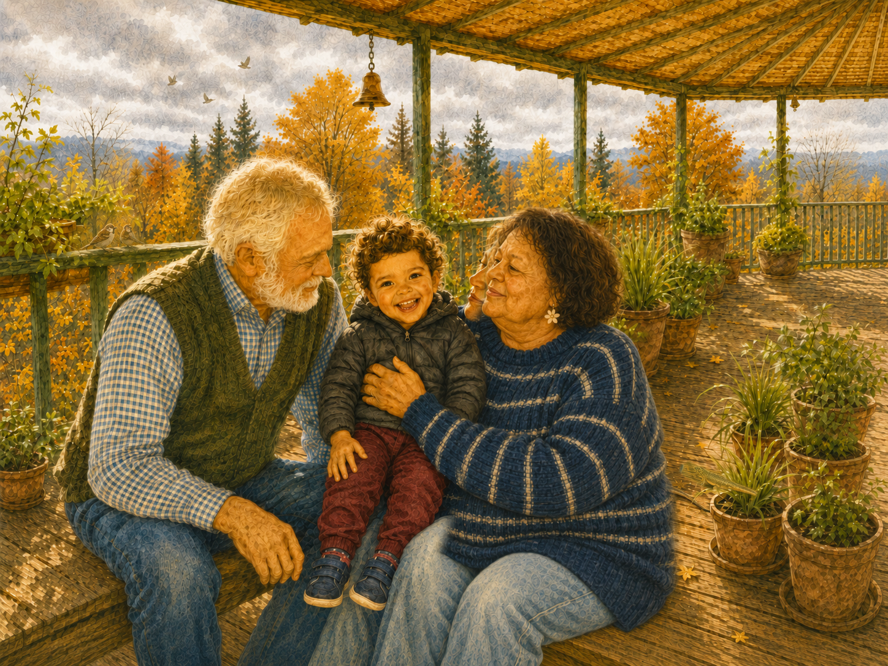
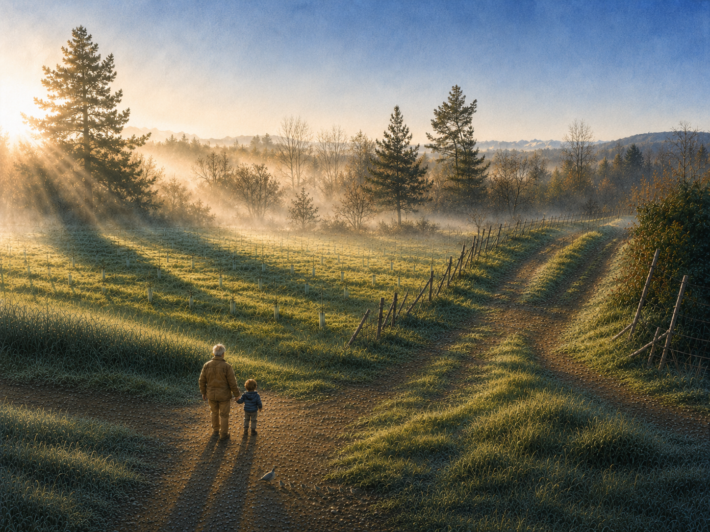
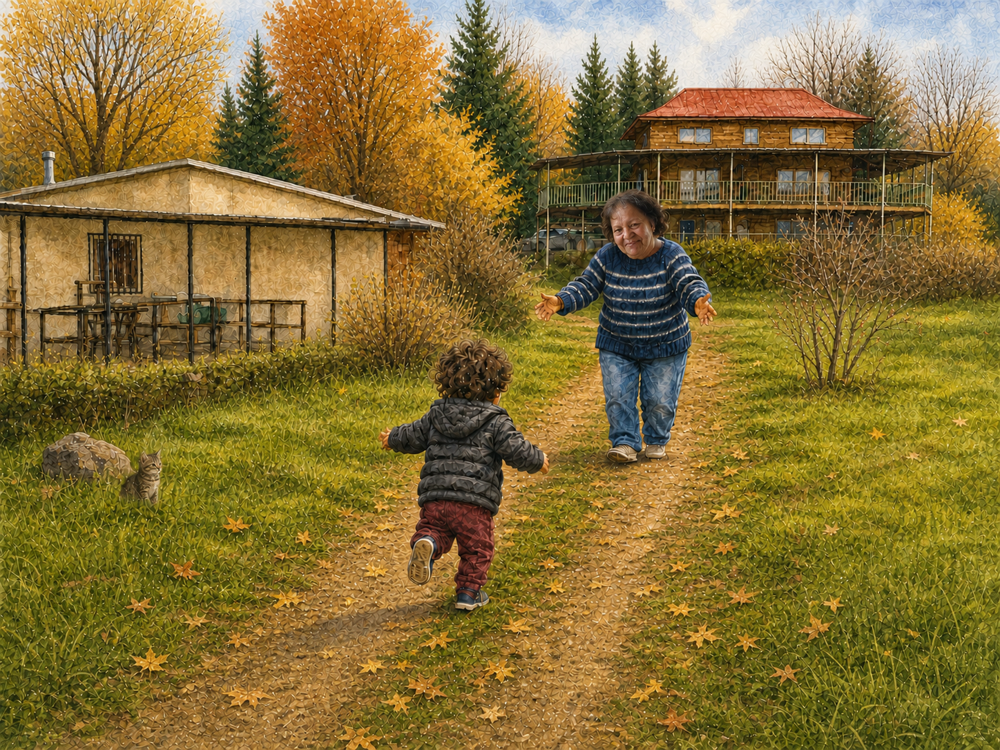
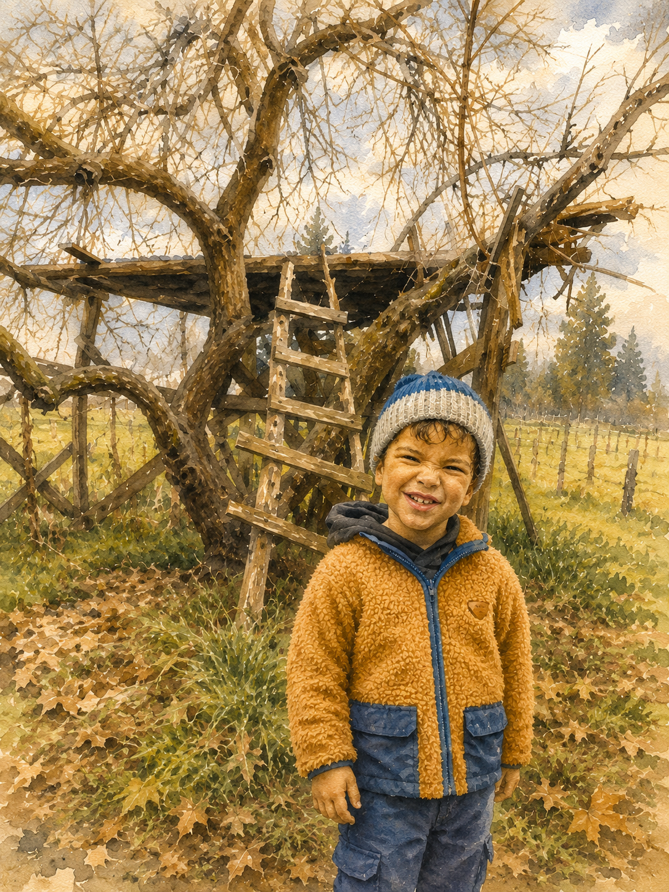
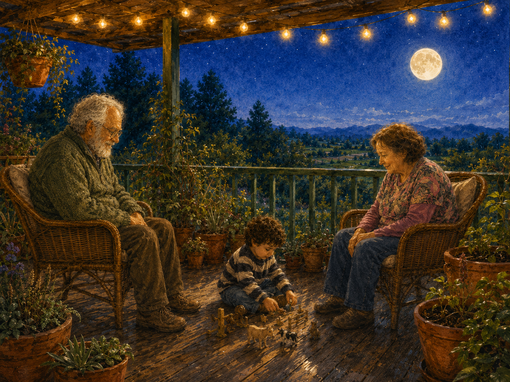
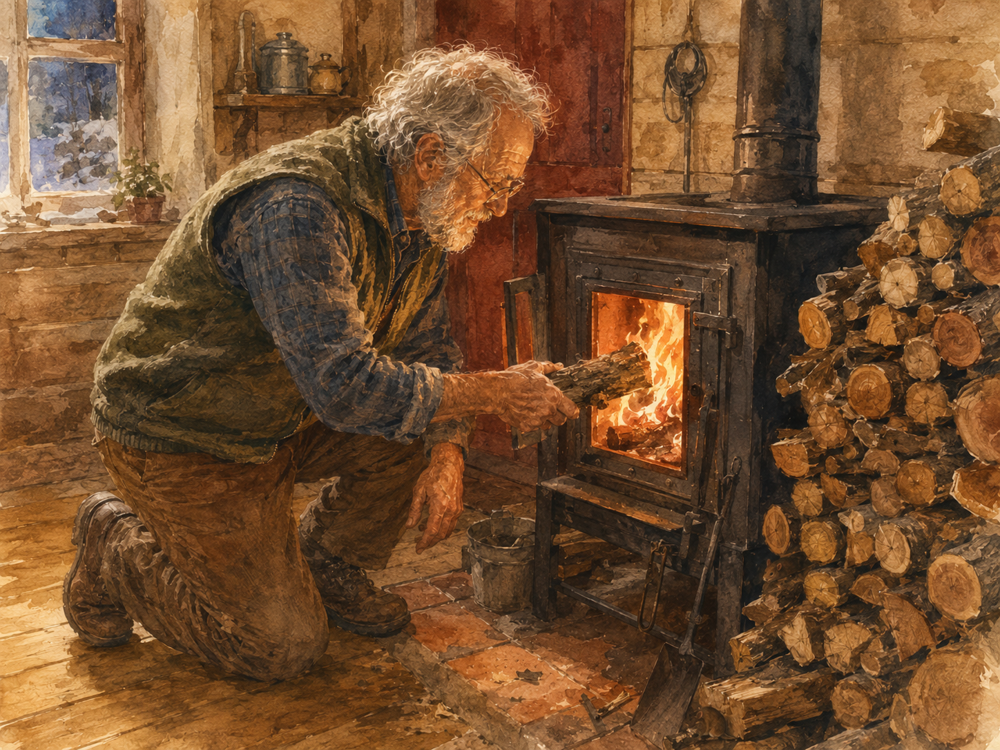

La casa de mis abuelos
se llama
El Recodo
❦
Naim Bro Khomasi
Cuando llego en otoño,
con mi parka y mi gorro,
el moai me espera en la entrada.
Como siempre.
Yo lo saludo.

En la terraza me esperan
mis abuelos:
Mastana y Masbaba.
Me toman en brazos.
Me dan un beso.
Ya llegué.
A la hora de almuerzo,
Mastana sirve fesenjan.
Nueces y granada,
comida persa.
A mí me brillan los ojos.

Cuando hace calor,
hay trabajo en el campo.
Masbaba necesita una ayuda.
¡Manos a la obra!
Masbaba saca el tractor
y yo me subo con él.
Él maneja.
Él señala a lo lejos.
Y allá vamos los dos.
En el taller de Masbaba
hay máquinas que hacen cosas.
Cables, rueditas, luces que prenden solas.
Yo me siento en sus piernas
y miro todo.
Hay ramas que juntar.
Masbaba tiene una pala.
Yo tengo mi palo.
Y trabajamos los dos.

Después corro
por el camino de tierra.
Me espera Mastana.
Ella hace unas láminas de fruta
riquísimas: el lavashak.
Tiene una salita especial
para prepararlas.
En verano,
Mastana revuelve la olla.
Adentro: ciruela, damasco, cereza.
La fruta se cocina despacito
y se vuelve lavashak.
Y a mí me encanta el lavashak.

En el damasco viejo
tengo una casa del árbol.
Me pongo el gorro
y subo a verla.
Me trepo hasta arriba.
Y desde ahí,
El Recodo se ve enterito.
Bajo por el sendero.
El río va
y va
y no para.
En otoño, un sauce se enciende
y el agua se hace de oro.
Yo me quedo mirando.

De noche, en la terraza,
se prenden las lucecitas
y aparece la luna.
Yo la miro
con Masbaba y Mastana.

Cuando llega el frío,
veo a Masbaba buscar leña.
La pone en la estufa.
El fuego se enciende.
Y la casa se pone tibia.
Yo hago otra casa.
Con cojines.
Y frazadas.
Y Mastana
juega conmigo.
Masbaba abre un libro.
Adentro hay peces.
Y peces.
Y más peces.
Yo los señalo todos.
De noche, junto al fuego,
Masbaba toca la guitarra.
De colores, de colores
son los pajaritos que vienen de afuera...
Yo escucho.
Después, Mastana me lleva a dormir.
Me canta bajito una oración:
Allahumma ya Subbuhun...
Yo cierro los ojos.
Afuera, el tractor duerme.
El río sigue.
Y El Recodo se queda quieto.
Cuando llego a El Recodo,
todo está listo para mí.
El tractor. Las máquinas. La olla.
La casa del árbol. El río. La guitarra.
Y Masbaba y Mastana,
que me esperan siempre.
KUCHULÚ EN EL RECODO
Borrador — junio 2026
Texto: Naim Bro Khomasi
Ilustraciones: borrador generado con IA
Para Saúl Ciro, el chiquitito, y para mis papis.